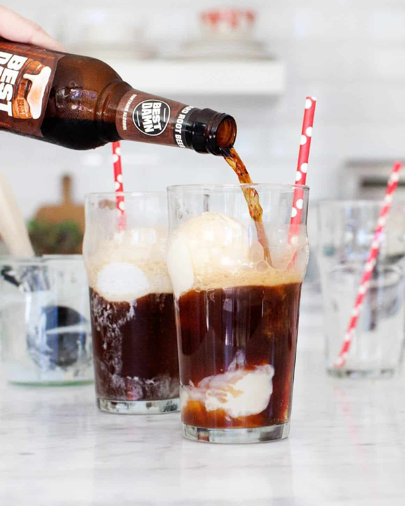

Rootbeer Float

A uniquely delicious root beer float that blends chocolate syrup,
root beer and vanilla ice cream.
Another easy to follow recipe to quench your thirst Root beer
float
Ingredients
chocolate syrup
root beer {any brand}
vanilla ice cream
tall glass
straws {optional}
Steps
- swirl chocolate syrup in glass
- put 3-4 scoops of vanilla ice cream in
- then pour root beer
- put in straw {optional}
- ENJOY
return to main page